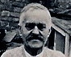
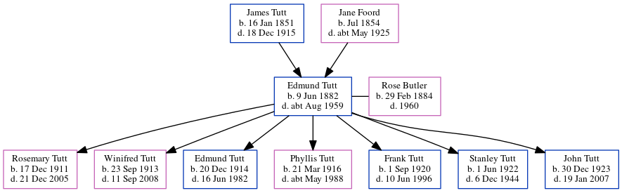

Edmund Thomas Tutt 1882 - c1959
[ Home ] | [ Calendar ] | [ Surnames Index ] | [ Census Index ] | [ Family History ]A bricklayer's laborer and the child of James Tutt (a general laborer) and Jane Foord (a general shop), Edmund Tutt, the first cousin twice-removed on the father's side of Nigel Horne, was born in Ramsgate, Kent, England on Jun 9, 18821,2,3,4,5 and married Rose Butler (a laundress with whom he had 7 children: Rosemary Frances, Winifred May, Edmund Thomas, Phyllis Jessie Clara, Frank Arthur James, Stanley Archibald and John Ernest) in St Lawrence, Thanet, Kent, England on Jul 11, 19096.
During his life, he was living at 10 Clarence Road in Ramsgate on Apr 5, 189111; at Hillbrow Road, St Lawrence in Thanet on Mar 31, 190110; at 27 Lorne Road, St Lawrence in Thanet on Apr 2, 19111; at Grosvenor Road, St Lawrence in Thanet on Jun 19, 19212; and at 20 Grosvenor Road in Ramsgate in 19359, in 19367, on Sep 29, 19393 and in 19558. In 1921 he was working at W W Martin Builder & Contractor.
He died c. Aug 1959 in Thanet5.
Parents
- James was born on Jan 16, 1851
- Jane was born in Jul 1854
Children
- Rosemary Frances was born on Dec 17, 1911
- Winifred May was born on Sep 23, 1913
- Edmund Thomas was born on Dec 20, 1914
- Phyllis Jessie Clara was born on Mar 21, 1916
- Frank Arthur James was born on Sep 1, 1920
- Stanley Archibald was born on Jun 1, 1922
- John Ernest was born on Dec 30, 1923
Citations
- 1911 Census for England & Wales - Findmypast (was age 28 and the head of the household)
- 1921 Census Of England & Wales - Findmypast (was age 39 and the head of the household)
- 1939 Register - Findmypast (was the head of the household)
- England & Wales births 1837-2006 - Findmypast
- England & Wales deaths 1837-2007 - Findmypast
- England & Wales Marriages 1837-2005 - Findmypast
- 1936 Kelly's Thanet Directory
- 1955 Kelly's Thanet Directory
- 1935 Kelly's Thanet Directory
- 1901 England, Wales & Scotland Census - Findmypast (was age 19 and the son of the head of the household)
- 1891 England, Wales & Scotland Census - Findmypast (was age - and the son of the head of the household)
Media
Edmund Tutt

1936 Kelly's Thanet Directory

1936 Kelly's Thanet Directory
1955 Kelly's Thanet Directory

1935 Kelly's Thanet Directory

1901 England, Wales & Scotland Census - GBC/1901/0007457449
1939 Register - TNA/R39/1767/1767C/002/32
England & Wales marriages 1837-2005 - BMD/M/1909/3/AZ/000400/109
England & Wales births 1837-2006 - BMD/B/1882/3/AZ/000573/177
Family Tree
Generated by ged2site. Last updated on Jun 11, 2024